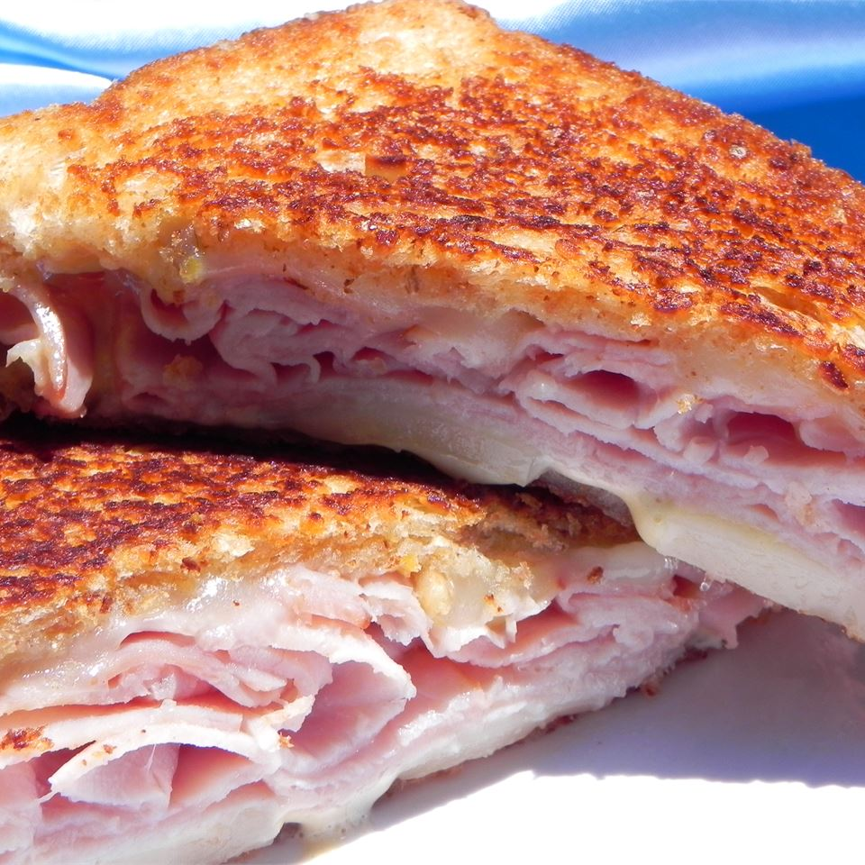

Ham and Cheese Sandwich

Ham and Cheese Sandwich
Ingredients
- 2 slices of bread (I use whole wheat)
- Ham slices
- 1 slice cheese (I prefer American Cheese, but choose a melting cheese of your choice
- 2 tbsp butter (make sure it is soft and at room temperature to be spreadable)
Steps
- Put cheese and ham in between two pieces of bread to form the sandwich.
- Spread butter on both sides of the sandwich.
- Toast both sides of the ham and cheese sandwich on a pan or griddle.
- Once both sides of the sandwich is crispy and the cheese in the
sandwich is melted, your sandwich is ready to serve and eat!